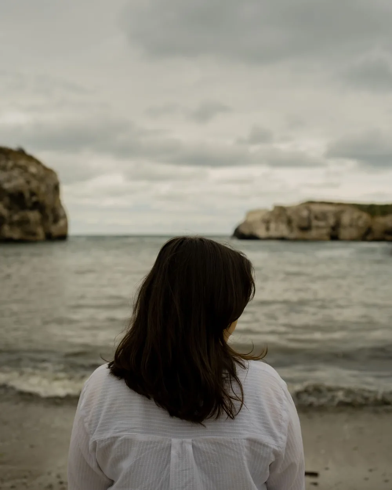

Travma ve EMDR
Bazı yaşantılar geçmişte kalmaz; bugün verilen tepkileri, bedeni ve ilişkileri etkilemeyi sürdürür. EMDR, bu anıların yeniden işlenmesi için kullanılan, araştırmalarla desteklenen bir psikoterapi yöntemidir.

Travma nedir?
Travma; kişinin baş etme kapasitesini aşan, kendini tehdit altında ya da çaresiz hissettiren yaşantıların bıraktığı izdir. Tek bir olaydan kaynaklanabileceği gibi, uzun süren zorlukların birikimiyle de oluşabilir.
Böyle bir anı, sıradan anılar gibi işlenip geçmişe yerleşmeyebilir. Bir koku, bir ses ya da benzer bir durum, olay yeniden oluyormuş gibi tepki uyandırabilir.
Nasıl kendini gösterir?
- Yeniden yaşamaİstem dışı gelen anılar, görüntüler ya da kâbuslar.
- KaçınmaOlayı hatırlatan yer, kişi ve konuşmalardan uzak durma.
- Sürekli tetikte olmaKolay irkilme, uyku sorunları, öfke patlamaları.
- Duygu ve inançlarda değişimSuçluluk, utanç, güvensizlik; “hiçbir yer güvenli değil” düşüncesi.
- Bedensel tepkilerHatırlatıcılar karşısında çarpıntı, gerginlik, donakalma.
- Bugüne yansıyan geçmişÇocukluk çağı yaşantılarının bugünkü ilişkilere ve benlik algısına etkisi.
EMDR nasıl uygulanır?
- 01Öykü ve planlama
Yaşam öyküsü alınır; hangi anılarla, hangi sırayla çalışılacağı birlikte belirlenir.
- 02Hazırlık
Duygu düzenleme becerileri güçlendirilir; kişinin kendini güvende hissettiği bir zemin kurulur.
- 03Anının değerlendirilmesi
Hedef anı, ona eşlik eden olumsuz inanç, duygu ve bedensel duyum belirlenir.
- 04Yeniden işleme
Anıya odaklanılırken göz hareketleri gibi çift yönlü uyarım uygulanır; anının rahatsız ediciliği azalır.
- 05Yerleştirme ve kapanış
Daha gerçekçi ve olumlu bir inanç güçlendirilir; her seans dengeli bir biçimde kapatılır.
Ne zaman destek almalı?
Olayın üzerinden zaman geçmesine rağmen anılar aynı canlılıkla geliyorsa, bazı yerlerden ve konulardan kaçınıyorsanız ya da kendinizi sürekli tetikte hissediyorsanız, bir değerlendirme görüşmesi yararlı olur.
Sık sorulanlar
EMDR’da olayı ayrıntısıyla anlatmam gerekir mi?
Hayır. EMDR, anının uzun uzun anlatılmasını gerektirmez; çalışma büyük ölçüde sizin iç sürecinizde ilerler.
EMDR kimler için uygundur?
Uygunluk ilk görüşmelerde değerlendirilir. Bazı durumlarda önce hazırlık ve dengelenme çalışmasına ağırlık verilir.
EMDR online yapılabilir mi?
Evet. Çift yönlü uyarım, görüntülü görüşmede de uygulanabilecek biçimlerde yapılabilir.


Büşra ErtaçUzman Klinik Psikolog. Bu sayfadaki bilgiler genel bilgilendirme amaçlıdır; tanı ve tedavinin yerini tutmaz.